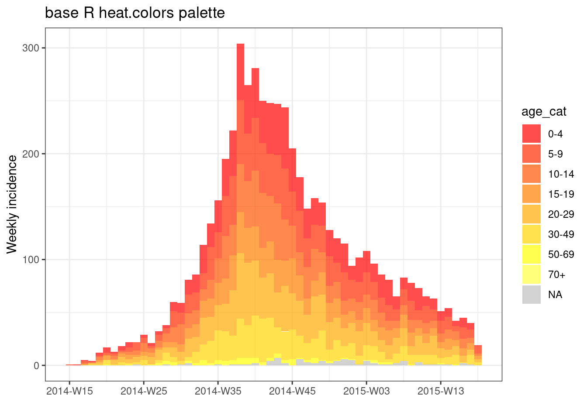
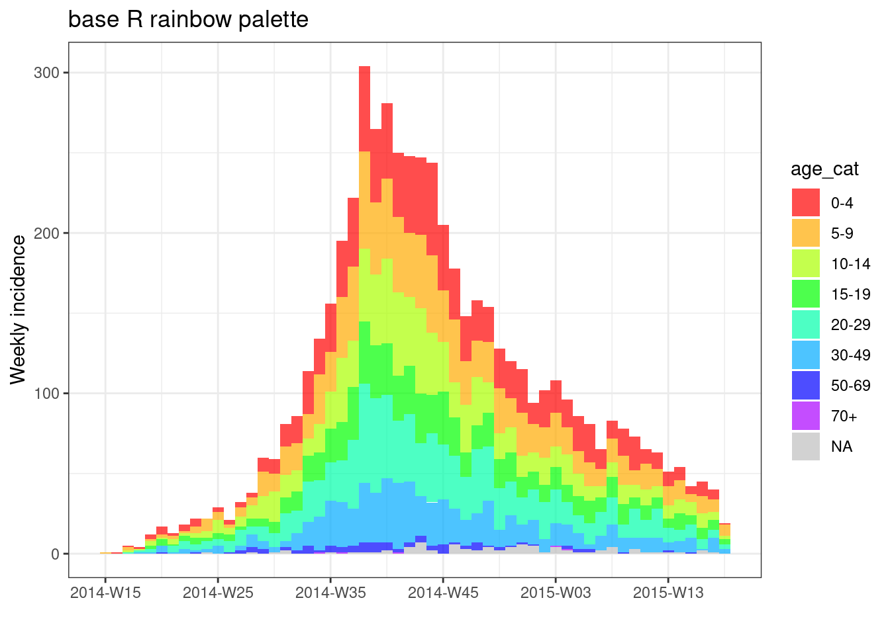
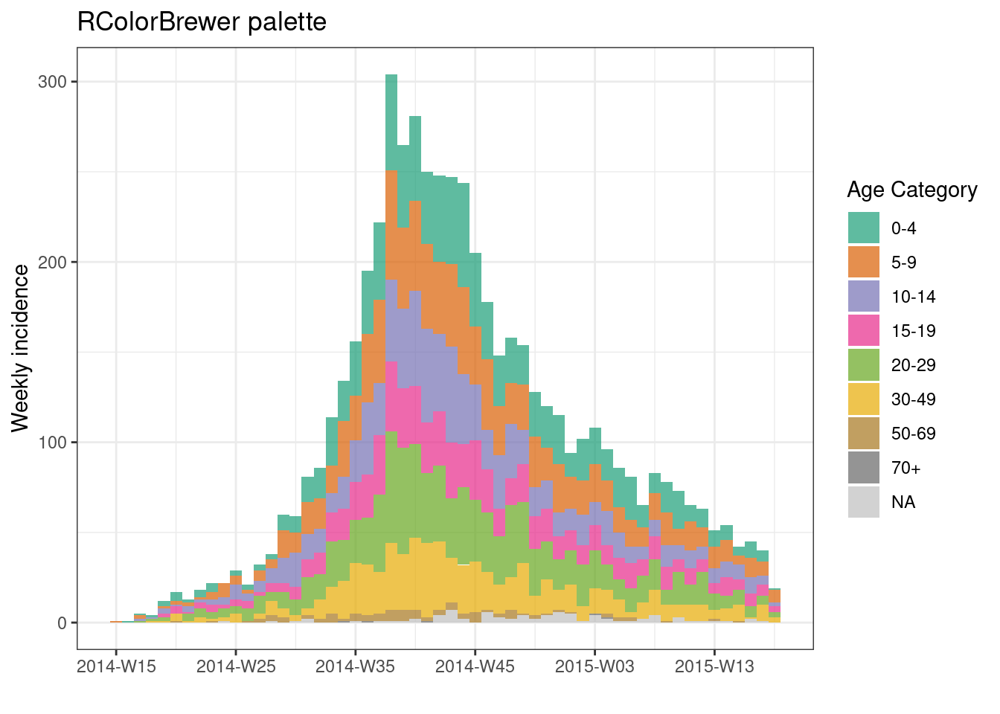
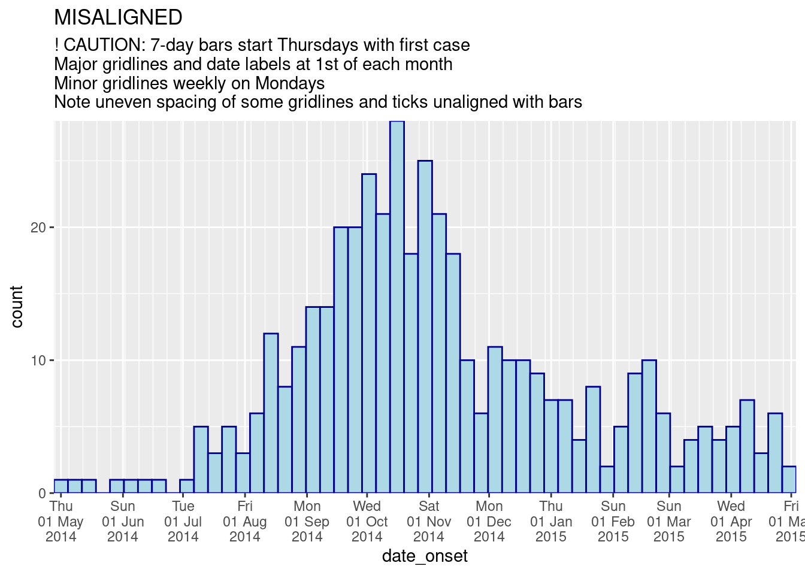
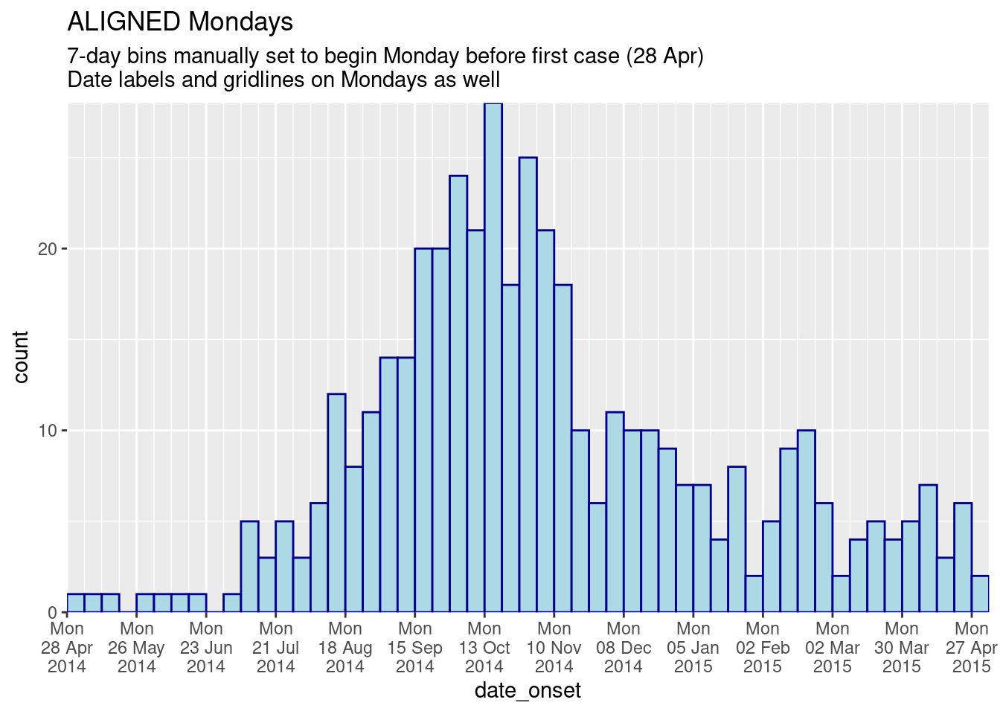
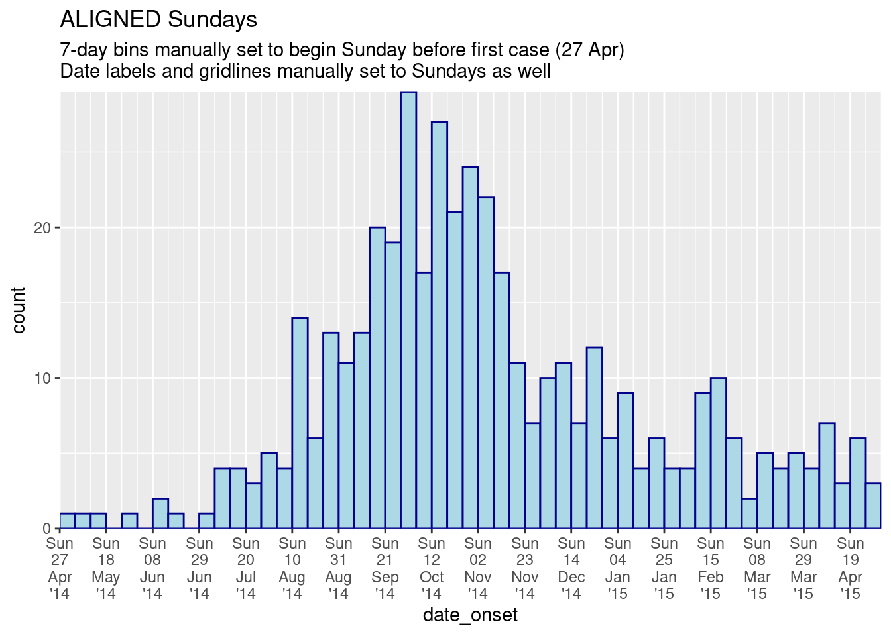
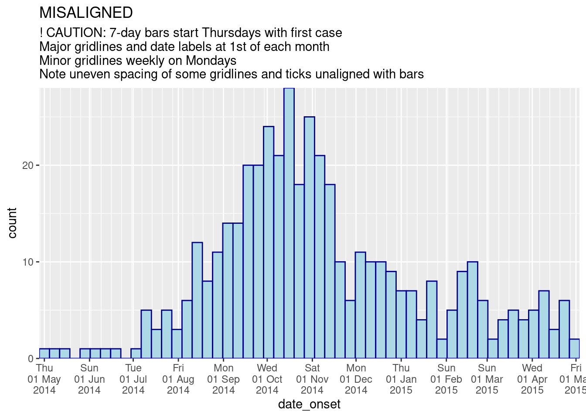
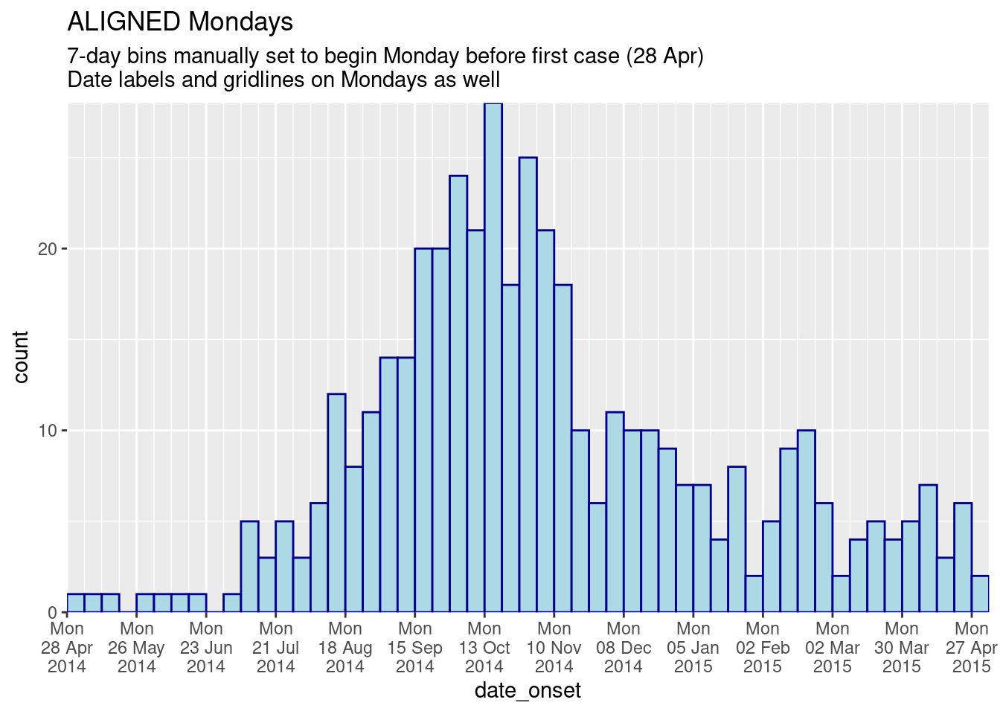
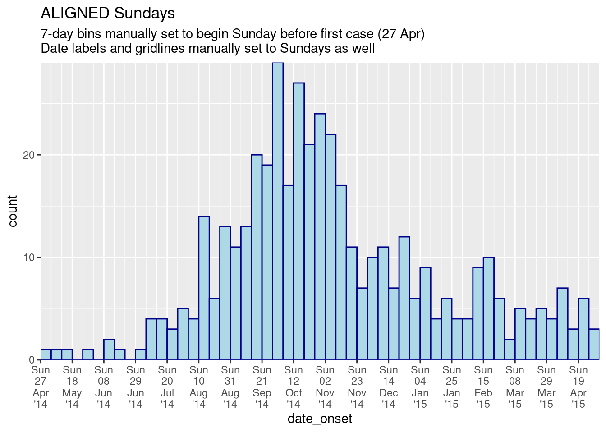

32 流行曲線（エピカーブ）

流行曲線（「エピカーブ」とも呼ばれる）は、流行集団（クラスター）における疾病の発症の時間的パターンを可視化するための基本的な疫学グラフです。
流行曲線を分析することで、時間的な傾向、異常値、アウトブレイクの規模、曝露の可能性が最も高い時期、症例の世代間の時間間隔などが明らかになり、さらには未知の新しい疾患の伝播様式（点源、継続的な共通感染源、人から人への伝播など）を特定するのにも役立ちます。流行曲線の解釈に関するオンライン上の資料の 1 つとして、米国疾病予防管理センター（Centers for Disease Control and Prevention; CDC）の 公式ウェブサイト があります。
本章では、R で流行曲線を作成する 2 つの方法を紹介します。
-
incidence2 パッケージを使用し、簡単なコマンドのみで流行曲線を作成することができる方法
- ggplot2 パッケージを使用し、より複雑なコマンドで高度なカスタマイズができる方法
また、以下のような具体的な使用例も紹介します。
集計データのプロット
ファセット化（小さなグラフを複数作成する）
移動平均の適用
報告が遅れている「暫定」データの表示
累積症例数を第 2 軸で重ね合わせたプロット
32.1 準備
パッケージの読み込み
解析に必要な標準パッケージを読み込みます。 このハンドブックでは、パッケージを読み込むために、pacman パッケージの p_load() を主に使用しています。p_load() は、必要に応じてパッケージをインストールし、現在の R セッションで使用するためにパッケージを読み込む関数です。また、すでにインストールされたパッケージは、R の基本パッケージである base の library() を使用して読み込むこともできます。R パッケージについての詳細は、R の基礎 の章を参照してください。
pacman::p_load(
rio, # file import/export
here, # relative filepaths
lubridate, # working with dates/epiweeks
aweek, # alternative package for working with dates/epiweeks
incidence2, # epicurves of linelist data
i2extras, # supplement to incidence2
stringr, # search and manipulate character strings
forcats, # working with factors
RColorBrewer, # Color palettes from colorbrewer2.org
tidyverse # data management + ggplot2 graphics
) 32.1.1 データのインポート
この章では2つのデータセットを使用します。
- 流行のシミュレーションデータから作成された症例ごとのデータ（ラインリスト）
- 同じ流行のシミュレーションデータから作成された病院ごとの症例数の集計値
データセットは、rio パッケージの import() を使ってインポートします。データをインポートする様々な方法については、データのインポート・エクスポート の章を参照してください。
ラインリスト（linelist）
エボラ出血熱の流行をシミュレートしたデータセットをインポートします。この章の内容をお手元の環境で実行したい方は、ハンドブックとデータのダウンロード の章をご覧ください。ファイルが作業ディレクトリにある場合、ファイルパスにはファイル名のみ指定します。
linelist <- import("linelist_cleaned.rds") 以下に、最初の 50 行を表示します。
病院ごとの症例数
以下のコードで、病院ごとの週別の集計数を含んだデータセットを linelist から作成します。
# 集計データをRにインポート
count_data <- linelist %>%
group_by(hospital, date_hospitalisation) %>%
summarize(n_cases = dplyr::n()) %>%
filter(date_hospitalisation > as.Date("2013-06-01")) %>%
ungroup()以下に、最初の 50 行を表示します。
パラメータの設定
レポートを作成する際に、データの現在の日付（「データ日」）を設定することができます。data_date オブジェクトにデータ日を定義することで、データセットをフィルタリングする際や脚注を書く際に用いることができます。
## レポート用に日付を設定
## メモ：Sys.Date()でも最新の日付を設定することができます
## note: can be set to Sys.Date() for the current date
data_date <- as.Date("2015-05-15")32.2 incidence2 パッケージ による流行曲線
以下では、incidence2 パッケージを使用して流行曲線を作成する方法を解説します。incidence2 パッケージの開発者は、ユーザーが ggplot2 の構文を知らなくても流行曲線を作成できるようにしました。この章で触れる内容の多くは、incidence2 の github page を元に作成されました。
簡単な例
incidence2 パッケージを使用して流行曲線を作る方法は、以下の 2 つのステップからなります。
-
incidence オブジェクトの作成 （
incidence()の使用）- データを準備
-
date_index =に日付列を指定
-
interval =で症例の集計単位を指定 （日、週、月など）
- グループ化する列の指定 （例：性別、病院、転帰）
- データを準備
-
incidence オブジェクトの可視化
- ラベル、色、タイトルなどの指定
以下では、incidence2 パッケージを読み込み、linelist の date_onset 列（発症日の列） から incidence オブジェクトを作成し、発症日ごとの症例数を集計しています。そして、 incidence オブジェクトのサマリーを表示します。
# incidence2 パッケージの読み込み
pacman::p_load(incidence2)
# incidence オブジェクトを発症日別に集計して作成
epi_day <- incidence( # incidence オブジェクトの作成
x = linelist, # データセットの指定
date_index = date_onset, # 日付列の指定
interval = "day" # 集計単位の指定
)incidence2 オブジェクト自体は、（データフレームのような）tibble のようになっていて、データフレームのように表示したり、さらに操作したりすることができます。
class(epi_day)## [1] "incidence2" "incidence_df" "tbl_df" "tbl" "data.frame"以下に、作成した incidence オブジェクトを表示します。 date_index と count 列があることがわかります。
epi_day## An incidence object: 367 x 2
## date range: [2014-04-07] to [2015-04-30]
## cases: 5632
## interval: 1 day
## cumulative: FALSE
##
## date_index count
## <date> <int>
## 1 2014-04-07 1
## 2 2014-04-15 1
## 3 2014-04-21 2
## 4 2014-04-25 1
## 5 2014-04-26 1
## 6 2014-04-27 1
## 7 2014-05-01 2
## 8 2014-05-03 1
## 9 2014-05-04 1
## 10 2014-05-05 1
## # … with 357 more rowsオブジェクトのサマリーも表示できます。
# incidence オブジェクトのサマリーを表示
summary(epi_day)## date range: [2014-04-07] to [2015-04-30]
## cases: 5632
## interval: 1 day
## cumulative: FALSE
## timespan: 389 daysincidence オブジェクトを可視化するためには incidence オブジェクトに対して plot() を使用します。 plot() を使用すると、バックグラウンドでは plot.incidence2() が呼び出されます。incidence2 パッケージ固有のドキュメントを読みたい場合は、?plot.incidence2 を実行してください。
# incidence オブジェクトの可視化
plot(epi_day)白い縦線が多く表示される場合は、画像のサイズを調整しましょう。例えば、 ggsave() を使って図を出力した場合、 width = と height = に数字を入れることでサイズを調整できます。 プロットの幅を広げれば、このような線は消えるはずです。
症例集計の時間単位の変更
incidence() の interval = という引数は、観察した症例をどのような時間単位で集計するかを定義します。
時間単位の指定
症例数を流行曲線に集約する方法を指定する方法について、incidence2 パッケージの関数は、柔軟で分かりやすい構文をとります。interval = 引数には、以下のような値が指定できます。以下の例のいずれも複数形で書くことができ（例：“weeks”）、また、前に数字を付けることもできます（例：“3 months”）。
| 引数オプション | 補足説明 |
|---|---|
| 数字 (1, 7, 13, 14, 等) | 集計単位となる日数 |
| “week” | メモ：月曜から始まるのがデフォルト |
| “2 weeks” | または3、４、５等 |
| “Sunday week” | 日曜から始まる週 ( Thursday 等も可能） |
| “2 Sunday weeks” | または3、４、５等 |
| “MMWRweek” | 日曜から始まる週（米国CDC参照） |
| “month” | 月の最初の日 |
| “quarter” | 四半期の最初の日 |
| “2 months” | または3、４、５等 |
| “year” | カレンダー年の最初の日 |
以下は、異なる間隔を linelist に適用した場合の表示例です。時間間隔の変更に伴って、X 軸上の日付ラベルのデフォルトフォーマットと頻度がどのように変化するかに注目してください。
# incidence オブジェクトの作成 (異なる時間間隔)
##############################
# 週 (月曜から始まるのがデフォルト)
epi_wk <- incidence(linelist, date_onset, interval = "Monday week")
# 日曜から始まる週
epi_Sun_wk <- incidence(linelist, date_onset, interval = "Sunday week")
# 3週 (月曜から始まるのがデフォルト)
epi_2wk <- incidence(linelist, date_onset, interval = "2 weeks")
# 月
epi_month <- incidence(linelist, date_onset, interval = "month")
# 四半期
epi_quarter <- incidence(linelist, date_onset, interval = "quarter")
# 年
epi_year <- incidence(linelist, date_onset, interval = "year")
# incidence オブジェクトの可視化 (わかりやすいようにタイトルを変更)
############################
plot(epi_wk)+ labs(title = "Monday weeks")
plot(epi_Sun_wk)+ labs(title = "Sunday weeks")
plot(epi_2wk)+ labs(title = "2 (Monday) weeks")
plot(epi_month)+ labs(title = "Months")
plot(epi_quarter)+ labs(title = "Quarters")
plot(epi_year)+ labs(title = "Years")


最初の日付
incidence() コマンドでは、日付型（例： as.Date("2016-05-01")）の値を firstdate = として指定することもできます。その場合、データはこの範囲で切り取られ、指定した日が集計単位の最初となります。
グループ化
グループは、 incidence() コマンドで指定され、棒グラフの色付けやデータのファセット（複数の小さなグラフの集合）に使用できます。データにグループを指定するには、 incidence() コマンドの groups = 引数に列名を指定します（列名は引用符で囲みません）。複数の列を指定する場合は、全ての列名を c() 内で指定します。
na_as_group = TRUE を設定すると、グループ化された列で値が欠損している症例を、個別の NA グループとして集計するように指定できます。FALSE と設定した場合は、欠損値のある行は図から除外されます。
グループ化された列で棒グラフを色分けするためには、
plot()コマンドのfill =に列名を指定します。グループ化された列でファセットを行うためには、後述の「incidence2 によるファセット」のセクションを参照してください。
以下の例では、ラインリストの症例が年齢群によってグループ化されています。欠損値はグループとして含まれています。流行曲線の時間単位は週です。
# incidence オブジェクトを年齢群でグループ化して作成
age_outbreak <- incidence(
linelist, # データセットの指定
date_index = date_onset, # 日付列の指定
interval = "week", # 症例を月曜始まりの週単位で集計
groups = age_cat, # age_cat をグループとして指定
na_as_group = TRUE) # 欠損値を1つのグループとして扱うように指定
# グループ化された incidence オブジェクトの可視化
plot(
age_outbreak, # 年齢群でグループ化したincidence オブジェクト
fill = age_cat)+ # age_cat で棒グラフの色分け (必ず上で age_cat がグループ化されている必要がある)
labs(fill = "Age Category") # 凡例のタイトルをデフォルトの「age_cat」から変更する （ggplot2 の設定の変更）ヒント：ggplot2 のコマンドである + labs(fill = "your title") で凡例のタイトルを変更できます。
また、以下のように plot() 内で stack = FALSE と指定することで、グループ化された棒グラフを並べて表示することができます。
# incidence オブジェクトを月単位で作成
monthly_gender <- incidence(
linelist,
date_index = date_onset,
interval = "month",
groups = gender # gender をグループとして指定
)
plot(
monthly_gender, # incidence オブジェクト
fill = gender, # gender で棒グラフの色分け
stack = FALSE) # 棒グラフをグループ毎に横に並べる (積み上げではなく)incidence() コマンドの na_as_group = 引数を FALSE と指定することで、欠損値のある行を図から除外することができます。
フィルタリングされたデータ
データの一部を使って流行曲線を作成するためには、以下のステップに従ってください。
- linelist データに対してフィルタリングを行う
-
incidence()コマンドにフィルタリングされたデータを指定する
- incidence オブジェクトを可視化する
以下の例では、Central Hospital という特定の病院の症例のみを表示するようにフィルタリングされたデータを使用しています。
# linelist をフィルタリング
central_data <- linelist %>%
filter(hospital == "Central Hospital")
# フィルタリングされたデータを使用して incidence オブジェクトの作成
central_outbreak <- incidence(central_data, date_index = date_onset, interval = "week")
# incidence オブジェクトの可視化
plot(central_outbreak, title = "Weekly case incidence at Central Hospital")集計値
元のデータが集計（カウント）されている場合は、incidence() で incidence オブジェクトを作成する際に、count = 引数に症例カウントを含む列名を指定します。
例えば、 count_data というデータフレームでは、病院別の症例数が一日毎にカウントされています。最初の 50 行は以下のようになっています。
上のデータセットのように日単位のカウントデータで分析を行う場合、これを病院別の週単位のエピカーブに変換する incidence() コマンドは次のようになります。
epi_counts <- incidence( # incidence オブジェクトを週単位で作成
count_data, # 日単位で集計されたデータセットを指定
date_index = date_hospitalisation, # 日付の列を指定
count = n_cases, # カウント数の列を指定
interval = "week", # 日単位のカウント数を週単位に変更するように指定
groups = hospital # hospital をグループとして指定
)
# 病院別でグループ化された積み上げ棒グラフの流行曲線を週単位で作成
plot(epi_counts, # incidence オブジェクト
fill = hospital) # hospital で棒グラフの色分けファセット・分割
グループ別にデータをファセットする（つまりデータを「小分割」する）には、以下のステップに従ってください。
- incidence オブジェクトの作成時に、ファセットしたい列を
groups =に指定する。
-
plot()の代わりにfacet_plot()コマンドを使用する。
-
fill =としてグループ化する列とfacets =として使用するグループ化する列を指定する。
以下では、 incidence() コマンドで、 hospital と outcome の両方の列をグループ化列として指定します。そして facet_plot() によって病院ごとに異なる流行曲線を作成し、各流行曲線の中で outcome 別に色分けされた棒グラフを重ねるように指定します。
epi_wks_hosp_out <- incidence(
linelist, # データセットを指定
date_index = date_onset, # 日付列を指定
interval = "month", # 月単位に指定
groups = c(outcome, hospital) # outcome と hospital の2つをグループ化する列と指定指定
)
# 可視化
incidence2::facet_plot(
epi_wks_hosp_out, # incidence オブジェクト
facets = hospital, # ファセット化する列名
fill = outcome) # 色分けする列名 系統樹の可視化に使用される ggtree パッケージにも facet_plot() という関数があるため注意が必要です。そのため、上のコードでは incidence2::facet_plot() というように関数名を明示的に指定しています。
plot() による調整
incidence2 によって生成された流行曲線は、plot() 内の以下の引数によって変更・修正することができます。
以下の表は、棒グラフの見た目を変更する plot() の引数一覧です。
| 引数 | 説明 | 例 |
|---|---|---|
fill = |
棒グラフの色を指定する。 incidence() コマンドで groups = に指定された色名または列名のいずれか。 |
fill = "red"、または fill = gender
|
color = |
棒グラフの枠線、または棒グラフの中の各グループの枠線に色をつける。 | border = "white" |
legend = |
凡例の場所を指定する。 | “bottom”、“top”、“left”, “right”、 “none”のいずれか |
alpha = |
棒グラフの色の透明度を指定する | 1が最も濃く、0が最も透明 |
width = |
時間間隔に対する棒グラフの相対的な大きさを示す0～1の値 | width = .7 |
show_cases = |
ロジカル値。もし TRUE の場合は各症例が枠で表示される。アウトブレイクが小さい場合に適している。 | | |
次は、時間軸を変更する plot() の引数一覧です。
| 引数 | 説明 |
|---|---|
centre_dates = |
日付表示を棒グラフの中央に表示するか、先頭に表示するかについての TRUE/FALSE |
date_format = |
strptime (“%”) 構文を使用して日付表示形式を調整。center_dates = FALSEの場合のみ動作（詳細は後述） |
n.breaks = |
X軸の日付ラベルの分割数の目安 |
angle = |
X軸の日付ラベルの角度 |
size = |
文字サイズ |
date_breaks = 引数は、 centre_dates = FALSE の場合にのみ機能することに注意してください。日付型データ の章で説明されているように、以下の strptime 構文を使用して、引数に引用符で囲まれた文字値を指定します。「改行」には \n を使うことができます。
%d = 日付 (5, 17, 28, etc.)
%j = 年における日付 (ユリウス通日 001-366)
%a = 省略された曜日名 (Mon, Tue, Wed など)
%A = 省略されたいない曜日名 (Monday, Tuesday など)
%w = 曜日番号 (0-6, 日曜日が0)
%u = 曜日番号 (1-7, 月曜日が1)
%W = 週番号 (00-53, 月曜日が週の始め)
%U = 週番号(01-53, 日曜日が週の始め)
%m = 月 (01, 02, 03, 04 など)
%b = 省略された月名 (Jan, Feb など)
%B = 省略されていない月名 (January, February など)
%y = 2桁年 (例：89)
%Y = 4桁年 (例：1989)
%h = 時間 (24時間単位)
%m = 分
%s = 秒
%z = グリニッジ標準時間からの時間差
%Z = タイムゾーン （文字列型）
以下は、ラベルを変更する plot() の引数一覧です。
| 引数 | 説明 |
|---|---|
title = |
グラフのタイトル |
xlab = |
x軸のタイトル |
ylab = |
y軸のタイトル |
size = |
x軸の文字のサイズ（単位：pt）（他のサイズを調整するには ggplot の theme() を使用してください。 |
上の引数を複数使用した例を以下に紹介します。
# linelistのフィルタリング
central_data <- linelist %>%
filter(hospital == "Central Hospital")
# フィルタリングデータを使った incidence オブジェクトの作成
central_outbreak <- incidence(
central_data,
date_index = date_onset,
interval = "week",
groups = outcome)
# incidence オブジェクトの可視化
plot(
central_outbreak,
fill = outcome, # グラフの色分け
legend = "top", # 凡例を一番上に置く
title = "Cases at Central Hospital", # タイトル
xlab = "Week of onset", # x軸のタイトル
ylab = "Week of onset", # y軸のタイトル
show_cases = TRUE, # それぞれの症例を枠線で示す
alpha = 0.7, # 透明度
border = "grey", # 症例ごとの枠線
angle = 30, # 日付ラベルの角度
centre_dates = FALSE, # 日付ラベルを各グラフの先頭に配置
date_format = "%a %d %b %Y\n(Week %W)" # 日付の記載方法の変更
)さらにグラフの見た目を調整したい場合は、次の「 ggplot() による調整」のセクションを参照してください。
ggplot2 による調整
以下に示すように、 incidence2 の plot() の後に + で ggplot2 による調整を加えることができます。
下の例では、incidence2 のプロットを作成するコードの後、ggplot2 コマンドを使って、軸の修正、脚注の追加、太字フォントと文字サイズの調整を行っています。
scale_x_date() を追加すると、plot() の日付フォーマットのほとんどが上書きされてしまうことに注意してください。さらに詳しく知りたい方は、ggplot() の流行曲線のセクションと、このハンドブックの ggplot のヒント の章を参照してください。
# linelist のフィルタリング
central_data <- linelist %>%
filter(hospital == "Central Hospital")
# フィルタリングデータを使った incidence オブジェクトの作成
central_outbreak <- incidence(
central_data,
date_index = date_onset,
interval = "week",
groups = c(outcome))
# incidence オブジェクトの可視化
plot(
central_outbreak,
fill = outcome, # グラフの色分け
legend = "top", # 凡例を一番上に置く
title = "Cases at Central Hospital", # タイトル
xlab = "Week of onset", # x軸のタイトル
ylab = "Week of onset", # y軸のタイトル
show_cases = TRUE, # それぞれの症例を枠線で示す
alpha = 0.7, # 透明度
border = "grey", # 症例ごとの枠線
centre_dates = FALSE,
date_format = "%a %d %b\n%Y (Week %W)",
angle = 30 # 日付ラベルの角度
)+
scale_y_continuous(
breaks = seq(from = 0, to = 30, by = 5), # y軸を5ずつで区分
expand = c(0,0))+ # y軸の0以下の余分なスペースを削除
# 脚注の追加
labs(
fill = "Patient outcome", # 凡例タイトル
caption = stringr::str_glue( # 脚注（詳細は文字型・文字列型データの章を参照）
"n = {central_cases} from Central Hospital
Case onsets range from {earliest_date} to {latest_date}. {missing_onset} cases are missing date of onset and not shown",
central_cases = nrow(central_data),
earliest_date = format(min(central_data$date_onset, na.rm=T), format = '%a %d %b %Y'),
latest_date = format(max(central_data$date_onset, na.rm=T), format = '%a %d %b %Y'),
missing_onset = nrow(central_data %>% filter(is.na(date_onset)))))+
# 太字フォントの追加と脚注の位置の指定
theme(
axis.title = element_text(size = 12, face = "bold"), # 軸タイトルを大きく、太字にする
axis.text = element_text(size = 10, face = "bold"), # 軸の文字を大きく、太字にする
plot.caption = element_text(hjust = 0, face = "italic") # 脚注を左に寄せる
)色の変更
色パレットの指定
plot() の col_pal = 引数に、すでに定義されている色パレットの名前を指定します。incidence2 パッケージには、「vibrant 」と 「muted 」という2つの色パレットが付属しています。「vibrant 」では最初の6色が、「muted 」では最初の9色がそれぞれ異なる色となっています。それ以降の色は、他の色の補間となります。このような定義されたパレットは、こちらのウェブサイト で確認することができます。灰色は欠損値があった場合に用いられるため、パレットには含まれていません（na_color = を指定することでこのデフォルトを変更できます）。
# age でグループ化された incidence オブジェクトの作成
age_outbreak <- incidence(
linelist,
date_index = date_onset, # x軸を発症日に指定
interval = "week", # 症例を週単位で集計
groups = age_cat)
# デフォルトの色パレットを用いて流行曲線を作成
plot(age_outbreak, fill = age_cat, title = "'vibrant' default incidence2 palette")
# 異なる色パレットを用いる場合は以下
#plot(age_outbreak, fill = age_cat, col_pal = muted, title = "'muted' incidence2 palette")また、R の base パッケージに含まれている色パレットを使用することもできます（パレットの名前を引用符なしで指定してください）。
# Rのベースの色パレットを使用して可視化
plot(age_outbreak, fill = age_cat, col_pal = heat.colors, title = "base R heat.colors palette")
# Rのベースの色パレットを使用して可視化
plot(age_outbreak, fill = age_cat, col_pal = rainbow, title = "base R rainbow palette")
さらに、viridis パッケージや RColorBrewer パッケージから色パレットを追加することもできます。これらのパッケージを読み込み後、それぞれのパッケージに含まれている色を調整する関数 scale_fill_*() を、以下のように + で追加する必要があります。
pacman::p_load(RColorBrewer, viridis)
# 色パレットを使用して可視化
plot(age_outbreak, fill = age_cat, title = "Viridis palette")+
scale_fill_viridis_d(
option = "inferno", # color scheme, try also "plasma" or the default
name = "Age Category", # legend name
na.value = "grey") # for missing values
# 色パレットを使用して可視化
plot(age_outbreak, fill = age_cat, title = "RColorBrewer palette")+
scale_fill_brewer(
palette = "Dark2", # color palette, try also Accent, Dark2, Paired, Pastel1, Pastel2, Set1, Set2, Set3
name = "Age Category", # legend name
na.value = "grey") # for missing values
マニュアルで色を指定
マニュアルで色を指定するには、 plot() 内に ggplot2 の関数 scale_fill_manual() を + で追加し、色の名前または HEX コードのベクトルを values = 引数に与えます。 指定された色の数は、グループの数と等しくなければなりません。欠損値がグループであるかどうかに注意してください。欠損値は、因子（ファクタ）型データ の章で説明したように、データの前処理工程内で fct_explicit_na() という関数で “Missing” のような文字型に変換することができます。
# 色のマニュアル指定
plot(age_outbreak, fill = age_cat, title = "Manually-specified colors")+
scale_fill_manual(
values = c("darkgreen", "darkblue", "purple", "grey", "yellow", "orange", "red", "lightblue"), # 色
name = "Age Category") # 凡例のタイトルまた、ggplot のヒント の章で説明されているように、colorRampPalette() を使用し、定義した色のベクトルと使いたい色の数を指定することで、独自の色パレットを作ることができます。いくつかの色を指定するだけで、多くの色を取得できる良い方法です。
my_cols <- c("darkgreen", "darkblue", "purple", "grey", "yellow", "orange")
my_palette <- colorRampPalette(my_cols)(12) # 6つの色を12色に拡張
my_palette## [1] "#006400" "#00363F" "#00097E" "#3A0BAF" "#821ADD" "#A84BE2" "#B592CB"
## [8] "#C9C99B" "#E7E745" "#FFF600" "#FFCD00" "#FFA500"レベル順序の調整
グラフや凡例でのグループの表示順を調整するには、グループ化した列が因子型である必要があります。詳細は、因子（ファクタ）型データ の章を参照してください。
まず、デフォルトの順序で作成された病院別の週単位での流行曲線を見てみましょう。
# オリジナル（hospital が因子型ではない場合）
###################################
# hospitalでグループ化された週単位の incidence オブジェクトの作成
hospital_outbreak <- incidence(
linelist,
date_index = date_onset,
interval = "week",
groups = hospital)
# incidence オブジェクトの可視化
plot(hospital_outbreak, fill = hospital, title = "オリジナル - hospital が因子型ではない場合")次に “Missing” と “Other” が流行曲線の一番上に来るように順番を調整します。調整するために、以下のことを行います。
因子型を扱うために forcats パッケージを読み込む
-
データセットの調整 - ここでは、新しいデータセット（
plot_data）を定義する-
hospital列を因子型として定義した後にfct_relevel()でレベルの順序を設定し、“Other”と “Missing”が最初に来るようにすることで、棒グラフの一番上に表示されるようにする
-
incidence オブジェクトを作成し、可視化する
-
ggplot2 で修正を加える
-
scale_fill_manual()を使って、“Missing”が灰色、“Other”がベージュになるように、マニュアルで色を割り当てる
-
# hospital 列を因子型に変更する
###############################
# 因子型データを扱うために forcats パッケージを読み込む
pacman::p_load(forcats)
# hospital 列を因子型に変換しレベルを変更する
plot_data <- linelist %>%
mutate(hospital = fct_relevel(hospital, c("Missing", "Other"))) # "Missing" と "Other" が最初になるようにレベルを指定
# hospital と week でグループ化された週ごとの incidence オブジェクトの作成
hospital_outbreak_mod <- incidence(
plot_data,
date_index = date_onset,
interval = "week",
groups = hospital)
# incidence オブジェクトの可視化
plot(hospital_outbreak_mod, fill = hospital)+
# マニュアルで色を指定
scale_fill_manual(values = c("grey", "beige", "darkgreen", "green2", "orange", "red", "pink"))+
# ggplot でラベルを追加
labs(
title = "MODIFIED - hospital as factor", # グラフのタイトル
subtitle = "Other & Missing at top of epicurve",
y = "Weekly case incidence", # y軸のタイトル
x = "Week of symptom onset", # x軸のタイトル
fill = "Hospital") # 凡例のタイトルヒント：凡例の順番のみを逆にしたい場合は ggplot2 コマンドのguides(fill = guide_legend(reverse = TRUE))を追加する
縦罫線
デフォルトの incidence2 の設定でグラフを作成した場合、縦罫線が各日付ラベルと各日付ラベルの間に 1 回ずつ表示されることに気づくかもしれません。このため、罫線が一部の棒グラフの上部と交差してしまうことがあります。
ggplot2 のコマンド theme_classic() を追加することで、すべての罫線を削除することができます。
# incidence オブジェクトの作成
a <- incidence(
central_data,
date_index = date_onset,
interval = "Monday weeks"
)
# デフォルトの罫線
plot(a, title = "Default lines")
# 罫線幅の指定
# INCIDENCE2 1.0.0 では動作しません
# plot(a, title = "Weekly lines")+
# scale_x_date(
# date_breaks = "4 weeks", # major vertical lines align on weeks
# date_minor_breaks = "weeks", # minor vertical lines every week
# date_labels = "%a\n%d\n%b") # format of date labels
# 罫線の削除
plot(a, title = "No lines")+
theme_classic() # 罫線の削除ただし、週ごとに集計する場合、date_breaks と date_minor_breaks 引数は月曜日始まりの週にしか機能しないことに注意してください。週の始まりが他の曜日の場合は、代わりに breaks = と minor_breaks = 引数に日付を指定する必要があります。seq.Date() を使った例は ggplot2 のセクションを参照してください。
累積罹患率
incidence オブジェクトを incidence2 コマンドの cumulate() に渡し、次に plot() に渡すことで、累積罹患率のグラフを簡単に作成することができます。これは facet_plot() を一緒に使用した場合でも動作します。
# 週ごとの incidence オブジェクトの作成
wkly_inci <- incidence(
linelist,
date_index = date_onset,
interval = "week"
)
# 累積罹患率グラフの作成
wkly_inci %>%
cumulate() %>%
plot()ggplot2 を使って累積罹患率のグラフを作成する別の方法については、本章の後述のセクションを参照して下さい。例えば、流行曲線の上に累積罹患率の線グラフを重ねることも可能です。
移動平均
i2extras パッケージの add_rolling_average() を使用すると、Incidence2 プロットに簡単に移動平均を追加することができます。incidence2 オブジェクトを add_rolling_average() に渡し、次に plot() に渡します。add_rolling_average() 内で before = を移動平均に含めたい過去の日数として設定します（デフォルトは 2）。データがグループ化されている場合は、グループごとに移動平均が計算されます。
rolling_avg <- incidence( # incidence オブジェクトの作成
linelist,
date_index = date_onset,
interval = "week",
groups = gender) %>%
i2extras::add_rolling_average(before = 6) # 移動平均を追加 (ここではgenderごと)
# plot
plot(rolling_avg) # グループごとに移動平均が作成されているので自動でファセット化されるより一般的なデータに対して移動平均を算出する場合は本章後述の 移動平均 のセクションを参照して下さい。
32.3 ggplot2 を用いた流行曲線
ggplot() を使用して流行曲線を作成すると、より柔軟にカスタマイズできますが、より多くの手順と ggplot() の動作の理解が必要です。
incidence2 パッケージを使用する場合とは異なり、症例の集計単位（週、月など）や、日付軸のラベルの間隔をマニュアルで、注意して制御する必要があります。
以下の例では、linelist データセットの一部（Central Hospital の症例のみ）を使用しています。
ggplot() を使用した流行曲線の作成は、以下の 3 つの要素に分かれます。
- ラインリストの症例を、特定の「分割」ポイントで区別される「ビン」に集約したヒストグラム
- 軸のスケールとそのラベル
- タイトル、ラベル、キャプションなど、グラフの見た目に関するテーマ
症例のビンの指定
ここでは、症例をヒストグラムのビン（「バー」とも呼ばれる）に集約する方法を説明します。ここで重要なのは、ヒストグラムのビンへの症例の集約は、必ずしも x 軸に表示される日付と同じ間隔ではないということです。
以下は、日次と週次の流行曲線を作成するための最も簡単なコードです。
ggplot() コマンドでは、データセットを data = で指定します。 この土台の上に、ヒストグラムの形状を + で追加します。geom_histogram() では、date_onset 列が x 軸にマッピングされるように指定します。また、geom_histogram() 内では、aes() 内ではなく、ヒストグラムの binwidth = を日単位で設定します。この ggplot2 の構文が分かりにくい場合は、ggplot の基礎 の章を参照して下さい。
注意：binwidth = 7 を使って週別の症例数をプロットすると、7日間の最初のビンは、最初の症例で開始されます。特定の週を作成するには、以下のセクションを参照してください。
# daily
ggplot(data = central_data) + # データセットの指定
geom_histogram( # ヒストグラムの追加
mapping = aes(x = date_onset), # 日付列をx軸に指定
binwidth = 1)+ # 1日ごとのビンを指定
labs(title = "Central Hospital - Daily") # タイトル
# weekly
ggplot(data = central_data) + # データセットの指定
geom_histogram( # ヒストグラムの追加
mapping = aes(x = date_onset), # 日付列をx軸に指定
binwidth = 7)+ # 7日ごとのビンを指定、最初の症例から始まる（！）
labs(title = "Central Hospital - 7-day bins, starting at first case") # タイトル

この Central Hospital のデータセットの最初の症例は、症状が出たのが 1 日目だったことに注目しましょう。
## [1] "Thursday 01 May, 2014"ヒストグラムのビンの区切りをマニュアルで指定するには、binwidth = を使用せず、代わりに breaks = に日付のベクトルを指定します。
日付のベクトルは、R base の seq.Date() で作成します。この関数は、開始日 from = 、終了日 to = と日単位 by = を引数に取ります。例えば、以下のコマンドは、1 月 15 日から 6 月 28 日までの月ごとの日付を返します。
monthly_breaks <- seq.Date(from = as.Date("2014-02-01"),
to = as.Date("2015-07-15"),
by = "months")
monthly_breaks # 表示## [1] "2014-02-01" "2014-03-01" "2014-04-01" "2014-05-01" "2014-06-01"
## [6] "2014-07-01" "2014-08-01" "2014-09-01" "2014-10-01" "2014-11-01"
## [11] "2014-12-01" "2015-01-01" "2015-02-01" "2015-03-01" "2015-04-01"
## [16] "2015-05-01" "2015-06-01" "2015-07-01"このベクトルは、geom_histogram() に breaks = として与えることができます。
# 月ごと
ggplot(data = central_data) +
geom_histogram(
mapping = aes(x = date_onset),
breaks = monthly_breaks)+ # 上で定義した日付ベクトルを指定 vector of breaks
labs(title = "Monthly case bins") # タイトルby = "week" を設定すると、単純な週単位の日付列を返すことができます。以下はその一例です。
また、開始日と終了日を指定する代わりに、週単位のビンが最初の症例の前の月曜日から始まるようにコードを書くこともできます。以下の例では、これらの日付ベクトルを使用します。
# CENTRAL HOSPITAL データにおける月曜日だけを含んだ日付ベクトル
weekly_breaks_central <- seq.Date(
from = floor_date(min(central_data$date_onset, na.rm=T), "week", week_start = 1), # 最初の症例以前の月曜日の日付
to = ceiling_date(max(central_data$date_onset, na.rm=T), "week", week_start = 1), # 最後の症例以後の月曜日の日付
by = "week")上に書かれている少し複雑なコードを紐解いてみましょう。
-
「from」の数値（日付ベクトルの最初の日付）は以下のようにして設定されます。
-
lubridate パッケージの
floor_date()にdate_onset列の最少の値（na.rm=TRUEで欠損値を除外したmin()で得られる値）を渡します。この時にfloor_date()に「week」を指定すると、各週の開始日が月曜日 (week_start = 1) であるとした場合に、その症例の 「week」 の開始日が返されます。
-
lubridate パッケージの
同様に、「to 」の数値（日付ベクトルの最後の日付）は、逆の関数である
ceiling_date()を用いて、最後の症例の翌月曜日を返すように作成されます。seq.Date()の引数 by には、日、週、月の任意の数を指定することができます。week_start = 7を使用することで日曜から開始される週にすることができます。
これらの日付ベクトルは本章全体で使用するため、全体のデータに対するものも以下で定義しておきます（上記は Central Hospital のみ）。
# 全体のデータにおける日付ベクトルの作成
weekly_breaks_all <- seq.Date(
from = floor_date(min(linelist$date_onset, na.rm=T), "week", week_start = 1), # 最初の症例以前の月曜日の日付
to = ceiling_date(max(linelist$date_onset, na.rm=T), "week", week_start = 1), # 最後の症例以後の月曜日の日付
by = "week")これらの seq.Date() の出力は、ヒストグラムのビンの区切りだけでなく、ビンから独立した日付ラベルの区切りを作成するためにも使用できます。日付ラベルについては、後のセクションで詳しく説明します。
ヒント：bin breaks と date label breaks をあらかじめ名前付きのベクトルとして保存しておき、breaks = にそのベクトルを指定することで、よりシンプルな ggplot() コマンドにすることができます。
週別流行曲線の例
以下は日付ラベル、縦罫線を含んだ、月曜始まりの週別流行曲線を作成するための詳細なサンプルコードです。このセクションは、すぐにコードを必要とするユーザーのためのものです。それぞれの側面（テーマ、日付ラベルなど）を深く理解するためには、以降のセクションを参照して下さい。注目すべき点として以下があります。
- ヒストグラムのビンの区切りは、上で説明したように
seq.Date()で定義され、最も早い症例の前の月曜日から始まり、最後の症例の後の月曜日で終わります。
- 日付ラベルの間隔は
scale_x_date()の中のdate_breaks =で指定します。
- 日付ラベルの間の縦罫線の間隔は
date_minor_breaks =で指定します。
- 日付ラベルが正しいビンにカウントされているか確認するため
geom_histogram()のclosed = "left"オプションを指定します。 - x軸とy軸のスケールで
expand = c(0,0)を使用すると、軸の両側の余分なスペースがなくなり、日付ラベルが最初のバーから始まるようにできます。
# 月曜日ごとの集計
#############################
# 週ごとの日付ベクトルの作成
weekly_breaks_central <- seq.Date(
from = floor_date(min(central_data$date_onset, na.rm=T), "week", week_start = 1), # 最初の症例以前の月曜日の日付
to = ceiling_date(max(central_data$date_onset, na.rm=T), "week", week_start = 1), # 最後の症例以後の月曜日の日付
by = "week") # 7日間隔に指定
ggplot(data = central_data) +
# ヒストグラムの作成：ビンの分割数の指定：最初の症例の前の月曜日から始まり、最後の症例の後の月曜日を終了する
geom_histogram(
# マッピング
mapping = aes(x = date_onset), # 日付列をx軸にマッピング
# ビンの分割指定
breaks = weekly_breaks_central, # 上で定義したビンの分割
closed = "left", # 分割の開始から症例数をカウントする
# bars
color = "darkblue", # 枠線の色指定
fill = "lightblue" # 棒グラフの色の指定
)+
# x軸ラベル
scale_x_date(
expand = c(0,0), # X軸の前後の余分なスペースを削除
date_breaks = "4 weeks", # 日付ラベルと主要な縦罫線を4週ごとに表示。
date_minor_breaks = "week", # 小縦罫線を1週ごとに表示
date_labels = "%a\n%d %b\n%Y")+ # 日付ラベルのフォーマット
# y-axis
scale_y_continuous(
expand = c(0,0))+ # y軸の前後の余分なスペースを削除
# テーマの指定
theme_minimal()+ # 背景を簡潔なものに指定
theme(
plot.caption = element_text(hjust = 0, # 脚注を左寄せに配置
face = "italic"), # キャプションをイタリック体に指定
axis.title = element_text(face = "bold"))+ # 軸タイトルを太字に指定
# 脚注を含んだラベル
labs(
title = "Weekly incidence of cases (Monday weeks)",
subtitle = "Note alignment of bars, vertical gridlines, and axis labels on Monday weeks",
x = "Week of symptom onset",
y = "Weekly incident cases reported",
caption = stringr::str_glue("n = {nrow(central_data)} from Central Hospital; Case onsets range from {format(min(central_data$date_onset, na.rm=T), format = '%a %d %b %Y')} to {format(max(central_data$date_onset, na.rm=T), format = '%a %d %b %Y')}\n{nrow(central_data %>% filter(is.na(date_onset)))} cases missing date of onset and not shown"))日曜始まりの週
date_breaks = "weeks" は月曜始まりの週に対してのみ機能するため、日曜始まりの週に対して上記の可視化を行うには、いくつかの修正が必要です。
- ヒストグラムビンの分割点を日曜日に設定する必要があります （
week_start = 7）。
-
scale_x_date()内で、日付ラベルと縦罫線が日曜日に揃うように、breaks =とminor_breaks =に同様の日付の分割点を設定する必要があります。
例えば、日曜始まりの週に対する scale_x_date() コマンドは、以下のようになります。
scale_x_date(
expand = c(0,0),
# 日付ラベルと縦罫線の間隔を指定
breaks = seq.Date(
from = floor_date(min(central_data$date_onset, na.rm=T), "week", week_start = 7), # 最初の症例以前の月曜日の日付
to = ceiling_date(max(central_data$date_onset, na.rm=T), "week", week_start = 7), # 最後の症例以後の月曜日の日付
by = "4 weeks"),
# 小縦罫線の間隔を指定
minor_breaks = seq.Date(
from = floor_date(min(central_data$date_onset, na.rm=T), "week", week_start = 7), # 最初の症例以前の月曜日の日付
to = ceiling_date(max(central_data$date_onset, na.rm=T), "week", week_start = 7), # 最後の症例以後の月曜日の日付
by = "week"),
# 日付ラベルのフォーマット
date_labels = "%a\n%d %b\n%Y")+ # 曜日＋日付と省略月名と年グループ化・値による色分け
ヒストグラムのビンは、グループごとに色分けして積み重ねることができます。グループ化する列を指定するには、以下の変更を行います。詳しくは、ggplot の基礎 の章を参照してください。
-
aes()内で、列名をgroup =とfill =の引数に指定します。
-
aes()の外側にあるfill =の引数は、内側の引数を上書きするので削除してください。
-
aes()の内側の引数はグループごとに適用されますが、外側の引数はすべてのビンに適用されます （例えば、外側のcolor =で色を指定して、各ビンの枠線を同じ色で表示することができます）。
以下は、aes() コマンドでヒストグラムのビンを性別でグループ化、色分けする場合のコード例です。
aes(x = date_onset, group = gender, fill = gender)以下で適用してみます。
ggplot(data = linelist) + # データセットの指定（全病院データ）
# ヒストグラムの作成: ビンの分割点の指定、 最初の症例の前の月曜日から始まり、最後の症例の次の月曜日で終わるように設定する
geom_histogram(
mapping = aes(
x = date_onset,
group = hospital, # hospital でグループ化する
fill = hospital), # hospital 毎に棒グラフを色分けする
# ビン分割を月曜始まりの週ごとにする
breaks = weekly_breaks_all, # 上のコードで定義済みの全症例に対する月曜始まりの週毎に分割する
closed = "left", # 分割の開始から症例数をカウントする
# 枠線の色の指定
color = "black")
色の調整
-
各グループの色分けをマニュアルで設定するには、
scale_fill_manual()を使用します（scale_color_manual()とは別の関数であることに注意してください！）。色のベクトルを適用するには、
values =引数を使用します。欠損値の色を指定するには、
na.value =を使用します。labels =引数を使用して、凡例の項目名を変更します。念の為に、c("old" = "new", "old" = "new")のような名前付きベクトルとして指定するか、データ自体の値を調節してください。凡例のタイトルを指定するためには、
name =を使用します。
色やパレットに関する詳しい情報は、ggplot の基礎 の章を参照してください。
ggplot(data = linelist)+ # データセットの指定（全病院データ）
# ヒストグラムの作成
geom_histogram(
mapping = aes(x = date_onset,
group = hospital, # hospital でグループ化する
fill = hospital), # hospital 毎に棒グラフを色分けする
# ビン分割
breaks = weekly_breaks_all, # 上のコードで定義済みの全症例に対する月曜始まりの週毎に分割する
closed = "left", # 分割の開始から症例数をカウントする
# 枠線の色の指定
color = "black")+ # 枠線の色の指定
# マニュアルでの色の指定
scale_fill_manual(
values = c("black", "orange", "grey", "beige", "blue", "brown"),
labels = c("St. Mark's Maternity Hospital (SMMH)" = "St. Mark's"),
name = "Hospital") # 色の指定 - 順番に注意!
レベル順の調整
グループ化されたヒストグラムの積み重ねの順番は、グループ化された列を因子型にし、各因子のレベルの順番（とその表示ラベル）を指定することで調整します。詳しくは、因子（ファクタ）型データ の章、または、ggplot の基礎 の章をご覧ください。
因子（ファクタ）型データ の章で説明されているように、グラフを作成する前に forcats パッケージの fct_relevel() 関数を使用し、グループ化したい列を因子型に変換してレベル順をマニュアルで調整してください。
# forcats パッケージの読み込み
pacman::p_load(forcats)
# hospital をfactor 型としてデータセットを定義する
plot_data <- linelist %>%
mutate(hospital = fct_relevel(hospital, c("Missing", "Other"))) # factor 型に変換した後に"Missing"と"Other" 列が棒グラフの上に来るようにレベル順を調整する
levels(plot_data$hospital) # レベル順を表示する## [1] "Missing"
## [2] "Other"
## [3] "Central Hospital"
## [4] "Military Hospital"
## [5] "Port Hospital"
## [6] "St. Mark's Maternity Hospital (SMMH)"以下の例では、hospital 列を上記のように統合した上で凡例の順番を guides() 関数を用いて逆にして、“Missing” が凡例の一番下に来るように変更しています。
ggplot(plot_data) + # レベル順を変更した新しい hospital を使用する
# ヒストグラムの作成
geom_histogram(
mapping = aes(x = date_onset,
group = hospital, # hospital でグループ化する
fill = hospital), # hospital 毎に棒グラフを色分けする
breaks = weekly_breaks_all, # 以前のコードで定義済みの全症例に対する月曜始まりの週毎に分割する
closed = "left", # 分割の開始から症例数をカウントする
color = "black")+ # 枠線の色の指定
# x軸のラベル
scale_x_date(
expand = c(0,0), # X軸の前後の余分なスペースを削除
date_breaks = "3 weeks", # データを3週ごとに表示
date_minor_breaks = "week", # 縦縦罫線を1週ごとに表示
date_labels = "%d\n%b\n'%y")+ # 日付ラベルのフォーマット
# y軸のラベル
scale_y_continuous(
expand = c(0,0))+ # y軸の前後の余分なスペースを削除
# 手動での色の指定、順番に注意！
scale_fill_manual(
values = c("grey", "beige", "black", "orange", "blue", "brown"),
labels = c("St. Mark's Maternity Hospital (SMMH)" = "St. Mark's"),
name = "Hospital")+
# 外観の変更
theme_minimal()+ # 背景を簡潔なものに指定
theme(
plot.caption = element_text(face = "italic", # 脚注をイタリック体にして左に幅寄せ
hjust = 0),
axis.title = element_text(face = "bold"))+ # 軸タイトルを太字に
# ラベルの指定
labs(
title = "Weekly incidence of cases by hospital",
subtitle = "Hospital as re-ordered factor",
x = "Week of symptom onset",
y = "Weekly cases")ヒント：凡例の順番を逆にするには、次の ggplot2 コマンドを使用します: guides(fill = guide_legend(reverse = TRUE)).
凡例の調整
凡例やスケールについては、ggplot のヒント の章で詳しく説明していますが、以下にその要約を記載します。
- 凡例のタイトルを編集するには、scale 関数か、
labs(fill = "Legend title")を使用する（color =aesthetic を使用している場合はlabs(color = "")を使用する） -
theme(legend.title = element_blank())で凡例のタイトルを削除 -
theme(legend.position = "top")（“bottom”, “left”, “right” で凡例をそれぞれ下、左、右に配置。または”none” で凡例が削除される） -
theme(legend.direction = "horizontal")で凡例を水平に配置 -
guides(fill = guide_legend(reverse = TRUE))で凡例の順序を逆にする
棒グラフの横並び表示
グループ化されたヒストグラムのビンを積み重ねではなく横並びに表示するには、geom_histogram() 内で position = "dodge" と指定します（aes() の外で指定する）。
2 つ以上のグループがある場合、読みにくくなることがあるため、代わりにファセット化された可視化（グループごとにヒストグラムを表示する）を行った方が良いかも知れません。以下の例では、見やすくするために性別の欠測値を削除しています。
ggplot(central_data %>% drop_na(gender))+ # 性別の欠損値を除外する
geom_histogram(
mapping = aes(
x = date_onset,
group = gender, # gender でグループ化する
fill = gender), # gender 毎に棒グラフを色分けする
# ヒストグラムのビン分割の指定
breaks = weekly_breaks_central, # 上で定義したビンの分割
closed = "left", # 分割の開始から症例数をカウントする
color = "black", # 枠線の色の指定
position = "dodge")+ # 棒グラフを横並びに指定
# x軸のラベル
scale_x_date(expand = c(0,0), # X軸の前後の余分なスペースを削除
date_breaks = "3 weeks", # データを3週ごとに表示
date_minor_breaks = "week", # 縦縦罫線を1週ごとに表示
date_labels = "%d\n%b\n'%y")+ # 日付ラベルのフォーマット
# y軸のラベル
scale_y_continuous(expand = c(0,0))+ # y軸の前後の余分なスペースを削除
#手動での色の指定
scale_fill_manual(values = c("brown", "orange"), # 手動での色の指定、順番に注意！
na.value = "grey" )+
# 外観の変更
theme_minimal()+ # 背景を簡潔なものに指定
theme(plot.caption = element_text(face = "italic", hjust = 0), # 脚注をイタリック体にして左に幅寄せ
axis.title = element_text(face = "bold"))+ # 軸タイトルを太字に
# ラベルの指定
labs(title = "Weekly incidence of cases, by gender",
subtitle = "Subtitle",
fill = "Gender", # 凡例のタイトルを指定
x = "Week of symptom onset",
y = "Weekly incident cases reported")軸の範囲
軸の値の範囲を決める方法は 2 つあります。
一般的な方法は、xlim = c(min, max) と ylim = c(min, max) を包含する coord_cartesian() コマンドを使用することです（それぞれで min と max の値を指定します）。これは、実際にデータを削除するのではなく「ズーム」として機能し、統計量や要約尺度において重要です。
もう一つの方法として、scale_x_date() 内で limits = c() を使用して、最初の日付と最後の日付を設定することもできます。
以下はその一例です。
scale_x_date(limits = c(as.Date("2014-04-01"), NA)) # 最初の日付を指定し、最後の日付は指定しない同様に、新しい症例が報告されていない場合でも、x 軸を特定の日付（例えば現在の日付）まで伸ばしたい場合は、次のように指定します。
scale_x_date(limits = c(NA, Sys.Date()) # 最後の日付を現在の日付に指定警告：y軸の区切りや範囲の設定には注意が必要です（例：0 から 30 までを 5 ごとに分割: seq(0, 30, 5))。このようなやり方では、データが設定範囲外の値だった場合にグラフが極端に短くなる場合があります！
日付軸のラベルと罫線
ヒント：日付軸のラベルはデータの集約とは関係ありませんが、ビン分割、日付ラベル、垂直罫線を視覚的に美しいように揃えるために重要です
日付ラベルと罫線を変更するには、以下のいずれかの方法で scale_x_date() を使用します。
-
ヒストグラムのビン分割が日、月、月曜始まりの週、月、年である場合：
date_breaks =を使用して、ラベルと大きい罫線の間隔を指定します（例：“day”、 “week”、 “3 weeks”、“month”、“year”）date_minor_breaks =を使用して（日付ラベルの間の）小さい縦罫線の間隔を指定します最初の棒グラフからラベルを開始するために
expand = c(0,0)を追加します日付のラベルの書式を指定するには
date_labels =を使用します。日付型データ の章では、役立つヒントを紹介しています（改行には\nを使用など）
-
ヒストグラムのビン分割が日曜始まりの週：
-
breaks =とminor_breaks =を使用してそれぞれ一連の日付の区切りを指定します - 上記のように
date_labels =とexpand =を使用して調節することも可能です
-
注意点：
seq.Date()を使用して日付のベクトルを作成する方法については、ggplot の基礎 の章を参照して下さい。日付ラベルを作成するためのヒントについては、こちら のウェブサイト、または、本ハンドブックの 日付型データ の章を参照してください。
2つの例の比較
以下は、ビン分割とラベル、罫線が整列しているグラフと整列していないグラフの比較です。
# 7日ごとのビン分割＋月曜ラベル
#############################
ggplot(central_data) +
geom_histogram(
mapping = aes(x = date_onset),
binwidth = 7, # 最初の症例から7日ごとのビン分割
color = "darkblue",
fill = "lightblue") +
scale_x_date(
expand = c(0,0), # X軸の前後の余分なスペースを削除
date_breaks = "3 weeks", # データを3週ごとに表示
date_minor_breaks = "week", # 縦罫線を1週ごとに表示
date_labels = "%a\n%d\n%b\n'%y")+ # 日付ラベルのフォーマット
scale_y_continuous(
expand = c(0,0))+ # y軸の前後の余分なスペースを削除
labs(
title = "MISALIGNED",
subtitle = "! CAUTION: 7-day bars start Thursdays at first case\nDate labels and gridlines on Mondays\nNote how ticks don't align with bars")
# 7日ごとのビン分割＋月
#####################
ggplot(central_data) +
geom_histogram(
mapping = aes(x = date_onset),
binwidth = 7,
color = "darkblue",
fill = "lightblue") +
scale_x_date(
expand = c(0,0), # X軸の前後の余分なスペースを削除
date_breaks = "months", # 月の一番はじめの日
date_minor_breaks = "week", # 縦罫線を1週ごとに表示
date_labels = "%a\n%d %b\n%Y")+ # 日付ラベルのフォーマット
scale_y_continuous(
expand = c(0,0))+ # y軸の前後の余分なスペースを削除
labs(
title = "MISALIGNED",
subtitle = "! CAUTION: 7-day bars start Thursdays with first case\nMajor gridlines and date labels at 1st of each month\nMinor gridlines weekly on Mondays\nNote uneven spacing of some gridlines and ticks unaligned with bars")
# マニュアルでビン分割を月曜日に指定
#################################################################
ggplot(central_data) +
geom_histogram(
mapping = aes(x = date_onset),
# 最初の症例の前の月曜日から始まる7日ごとのビン分割を指定
breaks = weekly_breaks_central, # 本章で定義済み
closed = "left", # 分割の開始から症例数をカウントする
color = "darkblue",
fill = "lightblue") +
scale_x_date(
expand = c(0,0), # X軸の前後の余分なスペースを削除
date_breaks = "4 weeks", # 4週ごとの月曜日
date_minor_breaks = "week", # 月曜始まりの週
date_labels = "%a\n%d %b\n%Y")+ # 日付ラベルのフォーマット
scale_y_continuous(
expand = c(0,0))+ # y軸の前後の余分なスペースを削除
labs(
title = "ALIGNED Mondays",
subtitle = "7-day bins manually set to begin Monday before first case (28 Apr)\nDate labels and gridlines on Mondays as well")
# ラベルを月にして整列
############################################
ggplot(central_data) +
geom_histogram(
mapping = aes(x = date_onset),
# 最初の症例の前の月曜日から始まる7日ごとのビン分割を指定
breaks = weekly_breaks_central, # 本章で定義済み
closed = "left", # 分割の開始から症例数をカウントする
color = "darkblue",
fill = "lightblue") +
scale_x_date(
expand = c(0,0), # X軸の前後の余分なスペースを削除
date_breaks = "months", # 4週ごとの月曜日
date_minor_breaks = "week", # 月曜始まりの週
date_labels = "%b\n%Y")+ # 日付ラベルのフォーマット
scale_y_continuous(
expand = c(0,0))+ # y軸の前後の余分なスペースを削除
theme(panel.grid.major = element_blank())+ # 大きい縦罫線の削除
labs(
title = "ALIGNED Mondays with MONTHLY labels",
subtitle = "7-day bins manually set to begin Monday before first case (28 Apr)\nDate labels on 1st of Month\nMonthly major gridlines removed")
# マニュアルでビン分割とラベルを日曜日に指定
############################################################################
ggplot(central_data) +
geom_histogram(
mapping = aes(x = date_onset),
# 最初の症例の前の日曜日から始まる7日ごとのビン分割を指定
breaks = seq.Date(from = floor_date(min(central_data$date_onset, na.rm=T), "week", week_start = 7),
to = ceiling_date(max(central_data$date_onset, na.rm=T), "week", week_start = 7),
by = "7 days"),
closed = "left", # 分割の開始から症例数をカウントする
color = "darkblue",
fill = "lightblue") +
scale_x_date(
expand = c(0,0),
# 最初の症例の前の日曜日から始まる3週間ごとのラベルと大きい罫線を指定
breaks = seq.Date(from = floor_date(min(central_data$date_onset, na.rm=T), "week", week_start = 7),
to = ceiling_date(max(central_data$date_onset, na.rm=T), "week", week_start = 7),
by = "3 weeks"),
# 最初の症例の前の日曜日から始まる7日ごとの小さい罫線を指定
minor_breaks = seq.Date(from = floor_date(min(central_data$date_onset, na.rm=T), "week", week_start = 7),
to = ceiling_date(max(central_data$date_onset, na.rm=T), "week", week_start = 7),
by = "7 days"),
date_labels = "%a\n%d\n%b\n'%y")+ # 日付ラベルのフォーマット
scale_y_continuous(
expand = c(0,0))+ # y軸の前後の余分なスペースを削除
labs(title = "ALIGNED Sundays",
subtitle = "7-day bins manually set to begin Sunday before first case (27 Apr)\nDate labels and gridlines manually set to Sundays as well") 

集計データ
ラインリストではなく、施設や地域などの集計データのみがあることが多くあります。集計データのみでも ggplot() で流行曲線を作成することができますが、コードが少し異なります。このセクションでは、先述のデータ準備のセクションでインポートした count_data データセットを使用します。このデータセットは、linelist に含まれている症例数を日別にカウントしたデータです。最初の 50 行を以下に表示します。
日別カウントデータの可視化
日別カウントデータから流行曲線を作成することができます。以下は以前のコードとの相違点です。
aes()内で、日別カウントデータをy =に指定します（この場合、列名はn_casesです）。geom_histogram()に引数stat = "identity"を追加し、ヒストグラムのビンの高さをデフォルトの行数ではなく、y =として指定します。棒グラフの間に縦の白線が入らないように、
width =の引数を追加します。日別データの場合、1 に設定します。週別カウントデータの場合は 7 に設定します。月別のカウントデータでは、（各月で日数が異なるため）白線が問題となりますので、x 軸を因子型（月）に変換してgeom_col()を使用することを検討して下さい。
ggplot(data = count_data)+
geom_histogram(
mapping = aes(x = date_hospitalisation, y = n_cases),
stat = "identity",
width = 1)+ # 日別カウントデータ の場合は set width = 1 で棒グラフの間のスペースを適切にする
labs(
x = "Date of report",
y = "Number of cases",
title = "Daily case incidence, from daily count data")週別カウントデータの可視化
もしデータが週ごとの症例数であれば、以下と同じようになっているはずです（count_data_weekly というデータセット名にしています）。
以下に表示した count_data_weekly の最初の 50 行を見ると、週単位で症例が集計されていることがわかります。各週は、週の最初の日（デフォルトでは月曜日）で表示されています。
x = 引数に epiweek 列を指定して流行曲線をプロットします。y = 引数にカウント列（この例では、n_cases_weekly 列）を指定し、上で説明したように stat = "identity" を追加することを忘れないで下さい。
ggplot(data = count_data_weekly)+
geom_histogram(
mapping = aes(
x = epiweek, # x軸に疫学週を指定（日付型として）
y = n_cases_weekly, # y軸に週別カウントデータを指定
group = hospital, # hospital でグループ化して色分け
fill = hospital),
stat = "identity")+ # カウントデータをプロットする場合に必要
# x軸のラベル
scale_x_date(
date_breaks = "2 months", # データを2か月ごとに表示
date_minor_breaks = "1 month", # 縦罫線を1か月ごとに表示
date_labels = '%b\n%Y')+ # 日付ラベルのフォーマット（月の下に年を記載）
# 色パレットを指定 （RColorBrewer パッケージを使用）
scale_fill_brewer(palette = "Pastel2")+
theme_minimal()+
labs(
x = "Week of onset",
y = "Weekly case incidence",
fill = "Hospital",
title = "Weekly case incidence, from aggregated count data by hospital")
移動平均
詳細な説明については、移動平均 の章を参照して下さい。以下は、slider パッケージで移動平均を計算する方法の 1 つです。この方法では、移動平均はプロットする前にデータセット上で計算されます。
- データを日別、週別など必要に応じて集計します（データのグループ化 の章を参照）。
-
slider パッケージの
slide_index()で移動平均の列を新しく作成します。
- 移動平均を
geom_line()で 流行曲線の上（後）にプロットします。
詳細は slider パッケージの説明を参照して下さい。
# パッケージの読み込み
pacman::p_load(slider) # 移動平均の計算に slider を使用
# 週別カウントと7日間移動平均のデータセットを作成
#######################################################
ll_counts_7day <- linelist %>% # ラインリスト
## 日別にカウント
count(date_onset, name = "new_cases") %>% # "new cases"という名前の列を作成
drop_na(date_onset) %>% # 発症日欠損症例を除外
## 7日間移動平均数を計算
mutate(
avg_7day = slider::slide_index( # 新しい列を作成
new_cases, # new_cases 列の値を用いる
.i = date_onset, # date_onset 列の含まれていない日付も移動平均に含める
.f = ~mean(.x, na.rm = TRUE), # 欠損値を除外した上で平均をとる
.before = 6, # 日別に6日前までのデータを移動平均に含める
.complete = FALSE), # 次のステップのために FALSE に設定する
avg_7day = unlist(avg_7day)) # list型から数字型に変換
# プロット
######
ggplot(data = ll_counts_7day) + # 以前のコードで定義済みのデータセット
geom_histogram( # ヒストグラムの作成
mapping = aes(
x = date_onset, # x軸の日付列を指定
y = new_cases), # y軸に日別のカウント数を指定
stat = "identity", # カウントデータように指定
fill="#92a8d1", # かっこいい色を指定
colour = "#92a8d1", # 枠線も同じ色に指定
)+
geom_line( # 移動平均の線グラフを作成
mapping = aes(
x = date_onset, # x軸の日付列を指定
y = avg_7day, # y軸に日別の移動平均を指定
lty = "7-day \nrolling avg"), # 線グラフの凡例を記載
color="red", # 線グラフの色の指定
size = 1) + # 線グラフの太さの指定
scale_x_date( # 日付軸のスケール
date_breaks = "1 month",
date_labels = '%d/%m',
expand = c(0,0)) +
scale_y_continuous( # y軸のスケール
expand = c(0,0),
limits = c(0, NA)) +
labs(
x="",
y ="Number of confirmed cases",
fill = "Legend")+
theme_minimal()+
theme(legend.title = element_blank()) # 凡例のタイトルを削除ファセット化・プロットの小分割
他の ggplot と同様に、ファセット化されたグラフ（「複数の小さなグラフを並べたグラフ」）を作成することができます。ggplot の基礎 の章で説明されているように、 facet_wrap() と facet_grid() のどちらかを使用することができますが、ここでは facet_wrap() を使って説明します。流行曲線の作成においては、1 つの列に対してのみファセットするだけでよいので、一般的に facet_wrap() の方が簡単です。
一般的な構文は facet_wrap(rows ~ cols) で、チルダ (~) の左側はファセット化プロットの「行」に対する列の名前、チルダの右側はファセット化プロットの「列」に対する列の名前です。最も簡単な例では、チルダの右側に 1 つの列を指定します: facet_wrap(~age_cat)
フリースケール
各ファセットの軸のスケールを同じ値に「固定」（デフォルト）するか、「自由」（ファセット内のデータに基づいて変更する）にするかを指定します。これは、facet_wrap() 内の scales = 引数で、“free_x” か “free_y” か “free” を指定することでできます。
ファセットの列数と行数facet_wrap() 内で ncol = または nrow = で指定することができます。
パネルの順番
順序を変更するには、ファセットを作成するために使用される因子型列のレベルの順序を変更します。
外観
フォントサイズ、ヘッダ、色などは、以下のような引数を持つ theme() で変更することができます。
-
strip.text = element_text()(サイズ、ヘッダ、色、角度など) -
strip.background = element_rect()(例：element_rect(fill=“grey”)) -
strip.position =(ファセットのタイトルが記載されるボックスの場所を指定：“bottom”, “top”, “left”, or “right”)
ファセットラベル
ファセットプロットのラベルは、列の「ラベル」を用いるか「ラベラー（labeller）」の使用によって変更することができます。
ggplot2 の関数 as_labeller() を用いて、ラベラーを作成した後に、以下のように facet_wrap() の labeller = 引数に作成したラベラーを指定します。
my_labels <- as_labeller(c(
"0-4" = "Ages 0-4",
"5-9" = "Ages 5-9",
"10-14" = "Ages 10-14",
"15-19" = "Ages 15-19",
"20-29" = "Ages 20-29",
"30-49" = "Ages 30-49",
"50-69" = "Ages 50-69",
"70+" = "Over age 70"))以下は、age_cat 列でファセットしたグラフの作成例です。
# プロットの作成
###########
ggplot(central_data) +
geom_histogram(
mapping = aes(
x = date_onset,
group = age_cat,
fill = age_cat), # aes() 内の引数はグループされる
color = "black", # aes() 外の引数は全データに適用される
# ビン分割
breaks = weekly_breaks_central, # 以前のコードで定義済み （ggplot セクション参照）
closed = "left" # count cases from start of breakpoint
)+
# x軸のラベル
scale_x_date(
expand = c(0,0), # X軸の前後の余分なスペースを削除
date_breaks = "2 months", # データを2月ごとに表示
date_minor_breaks = "1 month", # 縦罫線を1月ごとに表示
date_labels = "%b\n'%y")+ # 日付ラベルのフォーマット
# y軸のラベル
scale_y_continuous(expand = c(0,0))+ # y軸の前後の余分なスペースを削除
# テーマの指定
theme_minimal()+ # 背景を簡潔なものに指定
theme(
plot.caption = element_text(face = "italic", hjust = 0), # 脚注をイタリック体にして左に幅寄せ
axis.title = element_text(face = "bold"),
legend.position = "bottom",
strip.text = element_text(face = "bold", size = 10),
strip.background = element_rect(fill = "grey"))+ # 軸タイトルを太字に
# ファセットの作成
facet_wrap(
~age_cat,
ncol = 4,
strip.position = "top",
labeller = my_labels)+
# ラベル
labs(
title = "Weekly incidence of cases, by age category",
subtitle = "Subtitle",
fill = "Age category", # 凡例のタイトル
x = "Week of symptom onset",
y = "Weekly incident cases reported",
caption = stringr::str_glue("n = {nrow(central_data)} from Central Hospital; Case onsets range from {format(min(central_data$date_onset, na.rm=T), format = '%a %d %b %Y')} to {format(max(central_data$date_onset, na.rm=T), format = '%a %d %b %Y')}\n{nrow(central_data %>% filter(is.na(date_onset)))} cases missing date of onset and not shown"))ラベラーの詳細については、こちら のウェブサイトを参照してください。
ファセットの背景に全体の流行曲線を表示
各ファセットの背景に全体の流行曲線を表示するには、ggplot で作成した図に gghighlight パッケージの gghighlight() を追加します。すべてのファセットにおける y 軸の最大値が、全体の流行曲線の頂点になっていることに注意して下さい。gghighlight パッケージの例は、ggplot の基礎 の章で多く紹介されています。
ggplot(central_data) +
# グループ化された流行曲線
geom_histogram(
mapping = aes(
x = date_onset,
group = age_cat,
fill = age_cat), # aes() 内の引数はグループされる
color = "black", # aes() 外の引数は全データに適用される
# ビン分割
breaks = weekly_breaks_central, # 以前のコードで定義済み （ggplot セクション参照）
closed = "left" # 分割の開始から症例数をカウントする
)+ # 以前のコードで定義済み （ggplot セクション参照）
# ファセットの背景に全体の流行曲線を灰色で示す
gghighlight::gghighlight()+
# x軸のラベル
scale_x_date(
expand = c(0,0), # X軸の前後の余分なスペースを削除
date_breaks = "2 months", # データを2月ごとに表示
date_minor_breaks = "1 month", # 縦罫線を1月ごとに表示
date_labels = "%b\n'%y")+ # 日付ラベルのフォーマット
# y軸のラベル
scale_y_continuous(expand = c(0,0))+ # y軸の前後の余分なスペースを削除
# テーマの指定
theme_minimal()+ # 背景を簡潔なものに指定
theme(
plot.caption = element_text(face = "italic", hjust = 0), # 脚注をイタリック体にして左に幅寄せ
axis.title = element_text(face = "bold"),
legend.position = "bottom",
strip.text = element_text(face = "bold", size = 10),
strip.background = element_rect(fill = "white"))+ # 軸タイトルを太字に
# ファセットの作成
facet_wrap(
~age_cat, # それぞれのプロットに age_cat のグループを表示
ncol = 4, # 列数を指定
strip.position = "top", # ファセットタイトルの位置を指定
labeller = my_labels)+ # 上で定義した labeller の指定
# ラベル
labs(
title = "Weekly incidence of cases, by age category",
subtitle = "Subtitle",
fill = "Age category", # 凡例のタイトル
x = "Week of symptom onset",
y = "Weekly incident cases reported",
caption = stringr::str_glue("n = {nrow(central_data)} from Central Hospital; Case onsets range from {format(min(central_data$date_onset, na.rm=T), format = '%a %d %b %Y')} to {format(max(central_data$date_onset, na.rm=T), format = '%a %d %b %Y')}\n{nrow(central_data %>% filter(is.na(date_onset)))} cases missing date of onset and not shown"))全データを含んだファセットの作成
全データを含むファセットボックスを表示したい場合は、データセット全体を複製し、複製したものを 1 つのファセットとして扱います。以下で自作する関数（ヘルパー関数）である CreateAllFacet() を使用すると可能です（このヘルパー関数は、こちら のページで紹介されているものです）。この関数を実行すると、行の数が 2 倍になり、facet という新しい列が作られます。その中で新たに複製された行は「all」という値を、元の行は facet 列の元の値を持つようになります。その後にこの facet 列に対してファセットを行います。
まず、ヘルパー関数を作成して実行し、利用できるようにします。
# helper 関数を定義する
CreateAllFacet <- function(df, col){
df$facet <- df[[col]]
temp <- df
temp$facet <- "all"
merged <-rbind(temp, df)
# ファセット値を因子型に指定
merged[[col]] <- as.factor(merged[[col]])
return(merged)
}次にこのヘルパー関数をデータセットの age_cat 列に適用します。
# 複製されたデータセットに新たに「facet」列を追加し、別のファセットレベルとして「all」年齢区分を表示する。
central_data2 <- CreateAllFacet(central_data, col = "age_cat") %>%
# 因子のレベルを指定
mutate(facet = fct_relevel(facet, "all", "0-4", "5-9",
"10-14", "15-19", "20-29",
"30-49", "50-69", "70+"))## Warning: 1 unknown level in `f`: 70+
# レベルのチェック
table(central_data2$facet, useNA = "always")##
## all 0-4 5-9 10-14 15-19 20-29 30-49 50-69 <NA>
## 454 84 84 82 58 73 57 7 9ggplot() コマンドにおける注意点は、以下の通りです。
使用するデータセットは central_data2（行数が 2 倍になり、新しい列 “facet” が追加）
ラベラーを使用する場合は、更新する必要があります。
必要であれば：縦に積み重ねたファセットを実現するために、ファセット列を式の行側に移動し、右側を “.” (
facet_wrap(facet~.)) に置き換え、ncol = 1とします。保存される png ファイルの幅と高さの調整が必要になります（ggplot の基礎 の章で紹介しているggsave()を参照してください）。
ggplot(central_data2) +
# グループ化された流行曲線
geom_histogram(
mapping = aes(
x = date_onset,
group = age_cat,
fill = age_cat), # aes() 内の引数はグループされる
color = "black", # aes() 外の引数は全データに適用される
# ビン分割
breaks = weekly_breaks_central, # 以前のコードで定義済み （ggplot セクション参照）
closed = "left", # 分割の開始から症例数をカウントする
)+ # 以前のコードで定義済み （ggplot セクション参照）
# x軸のラベル
scale_x_date(
expand = c(0,0), # X軸の前後の余分なスペースを削除
date_breaks = "2 months", # データを2月ごとに表示
date_minor_breaks = "1 month", # 縦罫線を1月ごとに表示
date_labels = "%b\n'%y")+ # 日付ラベルのフォーマット
# y軸のラベル
scale_y_continuous(expand = c(0,0))+ # y軸の前後の余分なスペースを削除
# テーマの指定
theme_minimal()+ # 背景を簡潔なものに指定
theme(
plot.caption = element_text(face = "italic", hjust = 0), # 脚注をイタリック体にして左に幅寄せ
axis.title = element_text(face = "bold"),
legend.position = "bottom")+
# ファセットの作成
facet_wrap(facet~. , # それぞれのプロットに一つのファセットを指定
ncol = 1)+
# labels
labs(title = "Weekly incidence of cases, by age category",
subtitle = "Subtitle",
fill = "Age category", # 凡例のタイトル
x = "Week of symptom onset",
y = "Weekly incident cases reported",
caption = stringr::str_glue("n = {nrow(central_data)} from Central Hospital; Case onsets range from {format(min(central_data$date_onset, na.rm=T), format = '%a %d %b %Y')} to {format(max(central_data$date_onset, na.rm=T), format = '%a %d %b %Y')}\n{nrow(central_data %>% filter(is.na(date_onset)))} cases missing date of onset and not shown"))
32.4 暫定データ
流行曲線で示される最新のデータは、多くの場合、暫定的な値であり、報告遅れのために後から症例数が追加される可能性があることを明示した方が良いでしょう。これは、直近の日数分を垂直線や長方形で囲むことで行うことができます。ここでは、2 つの方法を紹介します。
-
annotate()の使用：- 線の場合は
annotate(geom = "segment")を使用します。x、xend、y、yendを指定し、サイズ、線の種類(lty）、色を調整します。
- 長方形の場合は
annotate(geom = "rect")を使用します。 xmin/xmax/ymin/ymax を指定し、色とアルファ値を調整します。
- 線の場合は
データを暫定的なステータスでグループ化し、それらのビンを異なる色で表示します。
注意：長方形を作成するために geom_rect() を試すかも知れませんが、ラインリストの場合は上手くいきません。この関数は、各観測点・行に対して 1 つの長方形を重ねる関数です！非常に低いアルファ値（例えば 0.01）を使用するか、他の方法を用いてください。
annotate() の使用
annotate(geom = "rect")内で、xminとxmaxに日付型の引数を指定する必要があります。これらのデータは週単位のビンに集約されており、最後のビンは最後のデータポイントの次の月曜日まで伸びているので、影がかったエリアは4週間をカバーしているように見えるかもしれないことに注意してください。
annotate()の例は こちら を参考にしてください。
ggplot(central_data) +
# ヒストグラム
geom_histogram(
mapping = aes(x = date_onset),
breaks = weekly_breaks_central, # 以前のコードで定義済み
closed = "left", # 分割の開始から症例数をカウントする
color = "darkblue",
fill = "lightblue") +
# scales
scale_y_continuous(expand = c(0,0))+
scale_x_date(
expand = c(0,0), # X軸の前後の余分なスペースを削除
date_breaks = "1 month", # 月の最初の日
date_minor_breaks = "1 month", # 月の最初の日
date_labels = "%b\n'%y")+ # 日付ラベルのフォーマット
# ラベルとテーマの指定
labs(
title = "Using annotate()\nRectangle and line showing that data from last 21-days are tentative",
x = "Week of symptom onset",
y = "Weekly case indicence")+
theme_minimal()+
# 暫定データに対して半透明の影をかける
annotate(
"rect",
xmin = as.Date(max(central_data$date_onset, na.rm = T) - 21), # 日付型である必要があることに注意
xmax = as.Date(Inf), # 日付型である必要があることに注意
ymin = 0,
ymax = Inf,
alpha = 0.2, # annotate()では alpha 値で直感的に簡単に透明度を変えられる
fill = "red")+
# 黑の縦線を追加する
annotate(
"segment",
x = max(central_data$date_onset, na.rm = T) - 21, # 最終日の21日前
xend = max(central_data$date_onset, na.rm = T) - 21,
y = 0, # 線がy = 0 の場所から始まるように指定
yend = Inf, # 線が一番上まで続くように指定
size = 2, # 線の太さを指定
color = "black",
lty = "solid")+ # 線の種類 （例； "solid", "dashed"）
# 長方形の中に文字を追加
annotate(
"text",
x = max(central_data$date_onset, na.rm = T) - 15,
y = 15,
label = "Subject to reporting delays",
angle = 90)黒い縦線の追加は以下のコードでも可能ですが、以下のように geom_vline() を使うと、高さは調整できなくなります。
geom_vline(xintercept = max(central_data$date_onset, na.rm = T) - 21,
size = 2,
color = "black")ビンの色を変える
別の方法として、暫定データが反映されたビン自体の色や表示を調整することもできます。データ前処理の段階で新しい列を作り、作成した新しい列を使ってデータをグループ化し、暫定データの aes(fill = ) を他の棒グラフと異なる色やアルファ値にすることができます。
# 列の追加
############
plot_data <- central_data %>%
mutate(tentative = case_when(
date_onset >= max(date_onset, na.rm=T) - 7 ~ "Tentative", # 直近7日分の データは暫定である
TRUE ~ "Reliable")) # それ以外は 暫定ではない
# プロット
######
ggplot(plot_data, aes(x = date_onset, fill = tentative)) +
# ヒストグラム
geom_histogram(
breaks = weekly_breaks_central, # 以前のコードで定義済み
closed = "left", # 分割の開始から症例数をカウントする
color = "black") +
# scales
scale_y_continuous(expand = c(0,0))+
scale_fill_manual(values = c("lightblue", "grey"))+
scale_x_date(
expand = c(0,0), # X軸の前後の余分なスペースを削除
date_breaks = "3 weeks", # データを3週ごとに表示
date_minor_breaks = "week", # 縦罫線を1週ごとに表示
date_labels = "%d\n%b\n'%y")+ # 日付ラベルのフォーマット
# ラベルとテーマの指定
labs(title = "Show days that are tentative reporting",
subtitle = "")+
theme_minimal()+
theme(legend.title = element_blank()) # 凡例のタイトルを削除32.5 複数の日付ラベル
月や年など複数レベルの日付ラベルを、下位のラベルと重複することなく表示したい場合は、以下の方法のいずれかを試してみて下さい。
date_labels や labels の引数で、各ラベルの一部を下の行に配置するために \n 使うことができることも可能です。しかし、以下のコードを使うと、年や月を下の行に、かつ一度のみ表示することが可能です。
まず、最も簡単な方法は、scales パッケージの関数 label_date_short() を、scale_x_date() 内の labels = 引数に使用することです（注意：以下の例ように空の括弧 () を含めることを忘れないようにしてください）。 label_date_short() は、効率的な日付ラベルを自動的に作成します（詳しくは こちら のウェブサイトをご覧ください）。この関数のもう一つの特長は、データが日、週、月、年と時間と共に拡大していくのに応じて、ラベルが自動的に調整されることです。
ggplot(central_data) +
# histogram
geom_histogram(
mapping = aes(x = date_onset),
breaks = weekly_breaks_central, # 以前のコードで定義済み （ggplot セクション参照）
closed = "left", # 分割の開始から症例数をカウントする
color = "darkblue",
fill = "lightblue") +
# y-axis scale as before
scale_y_continuous(expand = c(0,0))+
# x-axis scale sets efficient date labels
scale_x_date(
expand = c(0,0), # X軸の前後の余分なスペースを削除
labels = scales::label_date_short())+ # 自動的に日付ラベルを生成
# labels and theme
labs(
title = "Using label_date_short()\nTo make automatic and efficient date labels",
x = "Week of symptom onset",
y = "Weekly case indicence")+
theme_minimal()もう一つの方法は、以下のようにファセット化を行うことです。
症例数は、外観上の理由から週単位で集計されています。詳細は、本章の「集計データ」のセクションを参照して下さい。
ヒストグラムの代わりに
geom_area()が使われていますが、これは、以下のファセット化のアプローチがヒストグラムではうまく機能しないためです。
週別にデータをカウント
# 週別にデータをカウントしたデータセットを作成
#######################################
central_weekly <- linelist %>%
filter(hospital == "Central Hospital") %>% # フィルター
mutate(week = lubridate::floor_date(date_onset, unit = "weeks")) %>%
count(week) %>% # 週別にカウント
drop_na(week) %>% # 発症日不明症例を除外
complete( # 症例が一例もなかった週を0で埋める
week = seq.Date(
from = min(week),
to = max(week),
by = "week"),
fill = list(n = 0)) # NAを0に変換グラフの作成
# 軸タイトルの年に対して枠線なしのグラフの作成
#################################
ggplot(central_weekly,
aes(x = week, y = n)) + # xとyを全プロットに対して指定
geom_line(stat = "identity", # カウントデータを用いて線グラフを作成
color = "#69b3a2") + # 線グラフの色
geom_point(size=1, color="#69b3a2") + # 週ごとに点を作成
geom_area(fill = "#69b3a2", # 線グラフの下のエリアを塗りつぶす
alpha = 0.4)+ # 塗りつぶしの透明度の指定
scale_x_date(date_labels="%b", # 日付ラベルのフォーマット（月名を示す）
date_breaks="month", # 日付ラベルを月ごとで分割
expand=c(0,0)) + # X軸の前後の余分なスペースを削除
scale_y_continuous(
expand = c(0,0))+ # y軸の前後の余分なスペースを削除
facet_grid(~lubridate::year(week), # （日付列の）年でファセット
space="free_x",
scales="free_x", # x軸をデータの範囲で調整（ファセット間で固定しない）
switch="x") + # ファセットのラベルを下に持ってくる
theme_bw() +
theme(strip.placement = "outside", # ファセットのラベルの場所
strip.background = element_blank(), # ファセットの背景の塗りつぶしをなくす
panel.grid.minor.x = element_blank(),
panel.border = element_blank(), # ファセットの境界線をなくす
panel.spacing=unit(0,"cm"))+ # ファセット間のスペースをなくす
labs(title = "Nested year labels - points, shaded, no label border")32.6 2軸グラフ
データ可視化のコミュニティー内では、2 軸グラフの有効性について激しい議論が交わされていますが、流行曲線やそれに類するグラフで、2 軸目に割合を重ねたものを見たいと思う疫学専門家は依然として多くいます。これについては ggplot のヒント の章で詳しく説明していますが、cowplot メソッドを使った一例を以下に示します。
- 2 つの異なるプロットを作成し、cowplot パッケージで結合します。
- 2 つのプロットはまったく同じ x 軸（範囲を設定する）を持つ必要があり、そうでないとデータとラベルがずれてしまいます。
- それぞれ
theme_cowplot()を使用し、一方は y 軸をプロットの右側に移動します。
# パッケージの読み込み
pacman::p_load(cowplot)
# 最初の流行曲線を作成
#######################################
plot_cases <- linelist %>%
# 週別の症例をプロット
ggplot()+
# ヒストグラムの作成
geom_histogram(
mapping = aes(x = date_onset),
# 最初の症例の前の月曜から、最後の症例の次の月曜までが含まれる週ごとのビン分割を指定
breaks = weekly_breaks_all)+ # 以前に定義した週ごとの日付のベクトル
# もう一つのグラフとの整合性を保つための最初と最後の日付の指定
scale_x_date(
limits = c(min(weekly_breaks_all), max(weekly_breaks_all)))+ # 最初と最後の日付の指定
# ラベル
labs(
y = "Daily cases",
x = "Date of symptom onset"
)+
theme_cowplot()
# 2つ目のグラフ（週ごとの死亡割合）の作成
###########################################
plot_deaths <- linelist %>% # ラインリスト
group_by(week = floor_date(date_onset, "week")) %>% # week 列を作成
# 週ごとの死亡割合を集計
summarise(n_cases = n(),
died = sum(outcome == "Death", na.rm=T),
pct_died = 100*died/n_cases) %>%
# プロット
ggplot()+
# 週ごとの死亡割合の線グラフ
geom_line( # 週ごとの死亡割合の線グラフの作成
mapping = aes(x = week, y = pct_died), # y軸に pct_died 列を指定
stat = "identity", # 行番号（デフォルト）ではなく、pct_death 列をy軸に指定
size = 2,
color = "black")+
# 最初のグラフと同じx軸の範囲にする
scale_x_date(
limits = c(min(weekly_breaks_all), max(weekly_breaks_all)))+ # 最初と最後の日付の指定
# y軸の調整
scale_y_continuous( # y軸の調整
breaks = seq(0,100, 10), # 軸の分割をパーセント用に設定する
limits = c(0, 100), # 軸の範囲をパーセント用に設定する
position = "right")+ # 軸を右に持ってくる
# x軸のラベルを削除し、y軸のラベルを指定する
labs(x = "",
y = "Percent deceased")+ # %軸のラベル
theme_cowplot() # 2つのプロットを良い感じに重ねる次に cowplot を使って 2 つのプロットを重ね合わせます。x 軸を合わせること、y 軸のサイド、theme_cowplot() の使い方に注目してください。
aligned_plots <- cowplot::align_plots(plot_cases, plot_deaths, align="hv", axis="tblr")
ggdraw(aligned_plots[[1]]) + draw_plot(aligned_plots[[2]])32.7 累積症例数
注意： incidence2 を使用する場合、簡単な関数で累積症例数を生成する方法のセクションを参照してください。このセクションでは、累積症例数を計算し、ggplot() でプロットする方法について説明します。
症例のラインリストから始める場合、R base の cumsum() を使用して\、アウトブレイクにおける日ごとの累積症例数の列を新たに作成します。
cumulative_case_counts <- linelist %>%
count(date_onset) %>% # 日ごとの症例数（"n"列）
mutate(
cumulative_cases = cumsum(n) # 日ごとの累積症例数列
)最初の 10 行は以下のようになります。
この累積症例数の列は、geom_line() を使用して、date_onset 列に対してプロットすることができます。
plot_cumulative <- ggplot()+
geom_line(
data = cumulative_case_counts,
aes(x = date_onset, y = cumulative_cases),
size = 2,
color = "blue")
plot_cumulativeまた、上記や ggplot の基礎 の章で説明されている cowplot を使って、2 軸で流行曲線に重ねることもできます。
#パッケージの読み込み
pacman::p_load(cowplot)
# 最初のグラフである流行曲線を作成
plot_cases <- ggplot()+
geom_histogram(
data = linelist,
aes(x = date_onset),
binwidth = 1)+
labs(
y = "Daily cases",
x = "Date of symptom onset"
)+
theme_cowplot()
# 2つ目のグラフである累積症例数の線グラフを作成
plot_cumulative <- ggplot()+
geom_line(
data = cumulative_case_counts,
aes(x = date_onset, y = cumulative_cases),
size = 2,
color = "blue")+
scale_y_continuous(
position = "right")+
labs(x = "",
y = "Cumulative cases")+
theme_cowplot()+
theme(
axis.line.x = element_blank(),
axis.text.x = element_blank(),
axis.title.x = element_blank(),
axis.ticks = element_blank())次に cowplot を使って 2 つのプロットを重ね合わせます。x 軸を合わせること、y 軸のサイド、theme_cowplot() の使い方に注意してください。
aligned_plots <- cowplot::align_plots(plot_cases, plot_cumulative, align="hv", axis="tblr")
ggdraw(aligned_plots[[1]]) + draw_plot(aligned_plots[[2]])